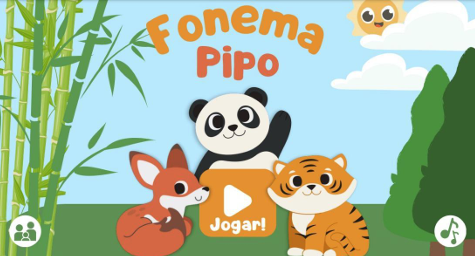

Olá, meu nome é
Edison Bezerra da Silva.
Desenvolvedor Back-End em formação.
Estudante de Sistemas de Informação construindo soluções com Java, SQL Server e MySQL, com base sólida em suporte técnico e infraestrutura de TI.
Vamos conversarSobre
Sou estudante de Sistemas de Informação pela Universidade Santa Cecília, com formação técnica em Desenvolvimento de Sistemas pela ETEC de Praia Grande. Hoje estou focado em me tornar desenvolvedor back-end, estudando Java e bancos de dados como MySQL e SQL Server.
Antes do código, construí uma base sólida em suporte técnico: no estágio na Prefeitura de São Vicente atuei com instalação, manutenção e configuração de sistemas e equipamentos de TI, tanto local quanto remotamente, e depois trabalhei como técnico de hardware na Oceano Informática.
Também tenho conhecimentos em Power BI, Excel e pacote Office. Sou proativo, organizado e orientado à resolução de problemas, sempre buscando aprimorar minhas habilidades e contribuir com soluções inovadoras.
Experiência
-
Jun 2026 — Atual Auxiliar de Escritório de Serviços · Alloha Fibra
Suporte às rotinas administrativas e operacionais: organização de documentos, controle de informações, atendimento a clientes e colaboradores, acompanhamento de solicitações e atualização de sistemas internos.
-
Jul 2025 — Fev 2026 Técnico de Hardware · Oceano Informática
Manutenção preventiva e corretiva em notebooks e computadores, incluindo formatação de sistemas, instalação de softwares, upgrades de hardware, limpeza física e otimização de desempenho. Diagnóstico e solução de falhas técnicas.
-
Dez 2023 — Set 2024 Suporte de TI (Estágio) · Prefeitura de São Vicente
- Suporte remoto e local: instalação e remoção de softwares, utilitários e aplicativos.
- Configuração de e-mail e equipamentos para inclusão na rede intranet da PMSV.
- Instalação e remoção de equipamentos de informática e periféricos.
Formação
-
2025 — 2030 Bacharelado em Sistemas de InformaçãoUniversidade Santa Cecília · em andamento
-
2022 — 2024 Técnico em Desenvolvimento de SistemasETEC de Praia Grande · Integrado ao Ensino Médio
-
Certificações Cursos complementares
- Java: criando a sua primeira aplicação
- Começando em Programação: carreira e primeiros passos
- C#
Projetos
-
Fonema Pipo↗
Durante a pandemia, muitas crianças passaram pela fase de alfabetização longe da sala de aula e hoje chegam aos anos seguintes sem saber ler e escrever direito. As escolas têm dificuldade para identificar quais alunos precisam de reforço e faltam ferramentas atrativas para treinar essas habilidades. O Fonema Pipo resolve isso de forma lúdica, testando e treinando a alfabetização com dinâmicas fonológicas, um método com eficácia comprovada por diversos estudos.

Contato
Vamos conversar?
Estou aberto a oportunidades de estágio e vagas júnior em desenvolvimento back-end. Se quiser trocar uma ideia, é só me chamar.
Enviar e-mail